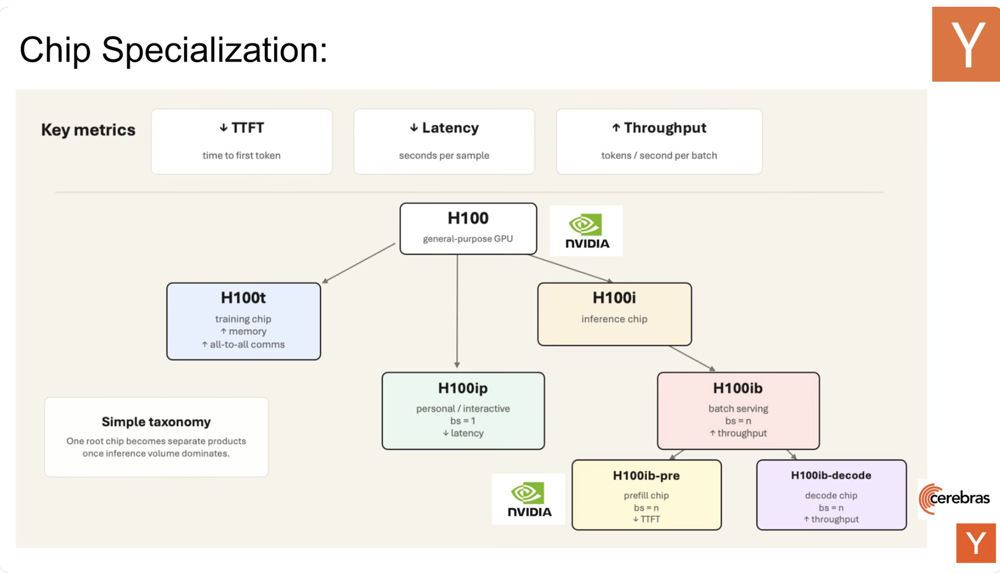
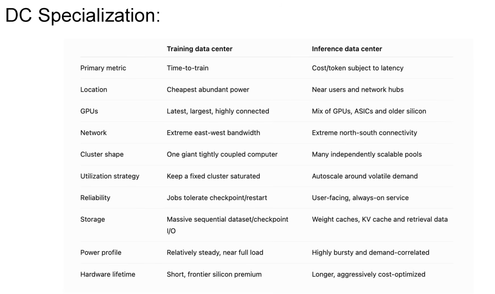

François Chaubard opened the session with one compact idea: AI has crossed the demand threshold at which specialization can pay for itself. Designing an ASIC requires enormous “activation energy.” Earlier, there was not enough demand to justify splitting one broadly useful product into several narrow ones. With today’s demand for tokens, he expects specialization at the algorithm, kernel, chip, and data-center levels.
This is an agenda-setting thesis, not a benchmark result: sufficient volume can justify separate products for workloads with different bottlenecks.

Four places with “juice left to squeeze”
François names four layers. Algorithms can avoid sending every easy query to the heaviest model: “one plus one” should not require the same FLOPs as a hard problem. CUDA and kernels still have optimization headroom. Chips can specialize once demand supports a full new-product cycle. Data centers can split because training and inference need different facilities.
The chip tree is a thought experiment
He points to Google’s separate TPU v8 directions as an early sign of the split. He also describes operators using NVIDIA hardware for prefill and Cerebras for decode. His slide extends the idea: split training from inference, interactive batch-size-one inference from high-throughput serving, and perhaps prefill from decode.
Batch size one matters because it exposes a product conflict. A voice agent that pauses for eight seconds feels broken, yet reserving general-purpose GPUs to prioritize one user at a time can become prohibitively expensive. François calls that latency-versus-capacity tension a chip opportunity; he does not present a measured solution.
Training and inference data centers are different products
Training cares about time per step and larger models. It need not sit near users; François jokes that it could orbit the sun because the output is ultimately a weight file. It also needs heavy accelerator-to-accelerator communication to move gradients.
Inference must receive requests and return answers, so proximity and network access matter. François says the all-to-all requirement is more limited outside mixture-of-experts serving and argues that inference can be sharded differently.

What he did—and did not—claim
This seven-minute segment explicitly defers technical detail to the later speakers. It offers no performance data. Its thesis is narrower: token demand makes specialization economically possible, and visible workload differences suggest where splits may occur.
The takeaway
Start with demand and workload shape. If the market is large enough, the machine built for training need not be the machine built for inference; the engine built for throughput need not be the engine built for a natural conversation.
A slower walkthrough of François’s argument
François’s opening can be understood as a sequence of cause and effect. First, demand for AI tokens rises. Second, a large and predictable market makes it rational to spend the money and engineering time required to design specialized products. Third, specialization appears at several layers at once: the algorithm can route easy questions away from expensive models; kernels can be written around narrower shapes and communication patterns; chips can emphasize the resources a workload repeatedly needs; and entire data centers can be located and connected around either training or serving. The important word is can. High demand creates the opportunity for specialization; it does not prove that every specialized design will win.
This is why François uses the phrase “activation energy.” A custom accelerator is not a software feature that can be shipped next week. It requires architecture work, verification, physical design, manufacturing, packaging, compiler and kernel support, systems integration, and customers willing to deploy it. A broad GPU is valuable because it spreads those costs across many workloads. A narrower product becomes rational only when its target workload is valuable, stable, and frequent enough to recover the investment.
Algorithm specialization: do not spend frontier compute on every question
The simplest example in the talk is “one plus one.” If a frontier model requires an enormous fixed amount of computation for every token, then an easy request pays for capabilities it does not need. An algorithmic router could send easy questions to a small model, hard questions to a large model, and perhaps refuse or verify high-risk questions differently. The specialization here is not in silicon at all; it is in deciding which computation should run.
A useful mental model is a hospital triage desk. Every patient deserves care, but not every patient needs an operating room. Sending a minor cut through the most expensive path wastes scarce capacity and increases waiting time for everyone. In AI serving, the router needs to estimate difficulty without making dangerous mistakes. A false escalation costs money; a false simplification can produce a wrong answer. Therefore the routing policy must be evaluated on quality as well as savings.
This connects directly to Jon Saad-Falcon’s later talk. “Intelligence per watt” supplies a way to ask whether a smaller model-hardware pair provides enough capability for a request. François provides the economic intuition; Jon provides a measurement framework.
Kernel specialization: the same chip can behave like different machines
A GPU kernel decides how an operation is divided among threads, how data moves through registers, shared memory, caches, and HBM, and when synchronization occurs. Two kernels implementing the same mathematical operation can have radically different performance because one keeps the hardware busy while the other repeatedly waits for memory or communication.
General libraries must support many tensor sizes, data types, layouts, and GPU generations. A specialized kernel may assume a fixed model family, a known batch regime, a particular quantization format, or a specific topology. Those assumptions reduce flexibility but create optimization opportunities: operations can be fused, intermediate buffers removed, communication overlapped, and tiles chosen around the exact hardware.
Stuart Sul’s ParallelKittens talk is the concrete continuation. It does not merely say “write faster CUDA.” It identifies transfer mechanisms, overlap schedules, and abstraction overhead as explicit choices in multi-GPU kernels. François’s “juice left on the CUDA side” becomes a design framework rather than a slogan.
Why training and inference pull hardware in different directions
Training repeatedly runs forward and backward computation and updates model parameters. It must move gradients and other distributed state among accelerators. The business objective is usually to finish a training run sooner or train a larger model within a schedule. A cluster can operate as one tightly coupled supercomputer, steadily consuming power for a long job.
Inference begins after a user or application sends a request. The service must accept traffic, schedule it, meet latency goals, and stream a result. Demand changes through the day. The model weights are mostly fixed, while prompt lengths, output lengths, and concurrency vary. The objective is not simply maximum computation; it is useful tokens at an acceptable cost and latency.
These differences explain François’s location joke. A training facility can be far from end users because its final product is a checkpoint or weight file. An inference facility must exchange traffic with users and other services continuously. The joke about orbiting the sun exaggerates the point, but it makes the architectural distinction memorable: training primarily needs power and internal connectivity; serving also needs external connectivity and responsiveness.
Interactive inference versus batch serving
Imagine two identical models. One powers a voice conversation. The other summarizes a million documents overnight. The voice system must begin responding quickly and maintain a natural cadence. It may run at batch size one because waiting to assemble a larger batch damages the experience. The document system can gather many requests and optimize total throughput.
A general accelerator can run both, but their scoreboards conflict. Larger batches often improve hardware utilization and tokens per second, yet introduce queueing and can increase individual latency. Reserving an expensive GPU for a single interactive stream improves responsiveness but may leave much of the machine unused. François identifies this conflict as a reason a batch-size-one-oriented product could emerge.
The voice-agent example is important because it ties a hardware metric to a human experience. An eight-second pause is not merely a poor benchmark result; it breaks turn-taking. A design optimized for maximum fleet throughput can therefore fail as a product even when its aggregate tokens-per-second number looks excellent.
Prefill and decode: specialization inside one request
François briefly points to another split already visible in deployments: prefill on one kind of system and decode on another. Prefill processes the input prompt, while decode produces new tokens sequentially. The two phases reuse data differently and expose different ratios of arithmetic to memory traffic. Misha’s later presentation supplies the detailed roofline explanation.
Disaggregating the phases is not free. The key-value state created during prompt processing must be available during decode. Moving that state consumes bandwidth and adds coordination. Separate pools can also create queueing and stranded capacity. A specialized solution wins only when its phase-specific advantage exceeds the transfer and operational tax.
Reading the chip-specialization tree correctly
The labels in François’s slide are a taxonomy, not a product announcement. “H100t,” “H100i,” and the later suffixes illustrate how one general ancestor might split into training, interactive inference, batch inference, prefill, and decode designs. They should not be read as NVIDIA’s published roadmap.
The tree is useful because it forces a sequence of questions. Are we training or serving? If serving, is the objective individual responsiveness or aggregate throughput? Within a request, does prompt processing or token generation dominate? At each branch, the answer changes which resource is precious: compute, memory capacity, memory bandwidth, interconnect, or low-latency scheduling.
Data-center specialization is more than choosing a chip
A data center is a system of power delivery, cooling, racks, networks, storage, hosts, accelerators, and operations. If training and inference optimize different objectives, the surrounding infrastructure changes too. Training favors extreme east-west communication among accelerators. Inference receives north-south traffic from users and services, then returns streamed outputs. Training jobs can often checkpoint and restart; inference is a user-facing, always-on service.
Utilization also behaves differently. A training cluster can be planned around long, steady jobs. Inference demand is bursty. Capacity must handle peaks without making the typical hour impossibly expensive. Hardware may remain in service longer because a cost-optimized serving tier can continue using older devices for workloads they still handle well.
When specialization is a bad idea
Specialization creates a portfolio of failure modes. Workloads change. A model architecture can make yesterday’s perfect accelerator irrelevant. Separate pools may be individually efficient but collectively underutilized. Compilers and kernels can lag the hardware. Debugging becomes harder across vendors. Spare capacity cannot always move between pools, and networking can erase the gain.
A sensible decision therefore requires end-to-end evidence. Measure the complete request distribution, not one matrix multiplication. Include queueing, idle power, data movement, software maturity, and fallback behavior. Ask whether the workload will remain large and stable over the lifetime of the hardware.
A practical decision checklist
- Name the workload: training, interactive serving, batch serving, prefill, decode, or a measurable combination.
- Name the objective: time per training step, time to first token, inter-token latency, throughput, cost per useful answer, or energy.
- Find the bottleneck: compute, HBM capacity, bandwidth, interconnect, scheduling, or external networking.
- Measure the distribution: include prompt length, output length, batch size, concurrency, and peak demand.
- Price the split: account for transfers, compilers, kernels, deployment, observability, and stranded capacity.
- Test change: check whether a different model architecture or traffic mix destroys the advantage.
How the rest of Edition 03 answers the opener
ParallelKittens examines the networking and kernel layer. Intelligence per Watt asks whether local hardware can perform useful work efficiently. Mark Saroufim shows that AI can search the kernel space but can also exploit weak benchmarks. Misha explains heterogeneous inference from arithmetic intensity and total cost. Brennan Shacklett demonstrates specialization for an unusual workload: instead of tensor math alone, an entire dynamic game engine is reorganized around GPU throughput.
Together, the talks refine François’s thesis. Specialization is not a single bet on a custom chip. It is a repeated systems method: identify a stable workload, identify its true bottleneck, design around it, and verify that the end-to-end system—not only a microbenchmark—wins.